STRINGS - Cadenas de Texto
En JavaScript, las cadenas de texto, conocidas como "strings", son una secuencia de caracteres utilizados para representar y manejar texto.
Las strings en JavaScript son inmutables, lo que significa que una vez creadas, no pueden ser modificadas. Los métodos que parecen modificar una string en realidad retornan una nueva string.
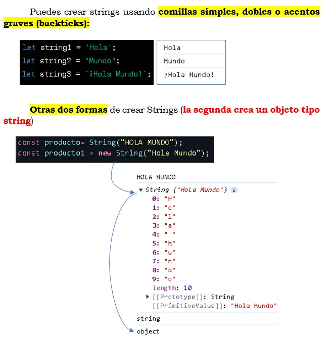STRINGS - Caracteres especiales
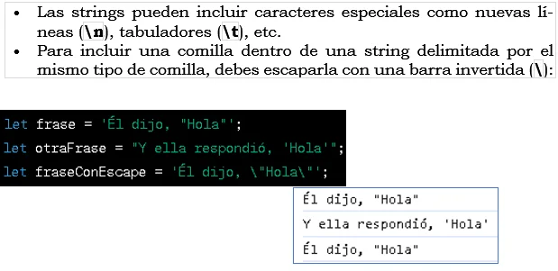STRINGS - Concatenación
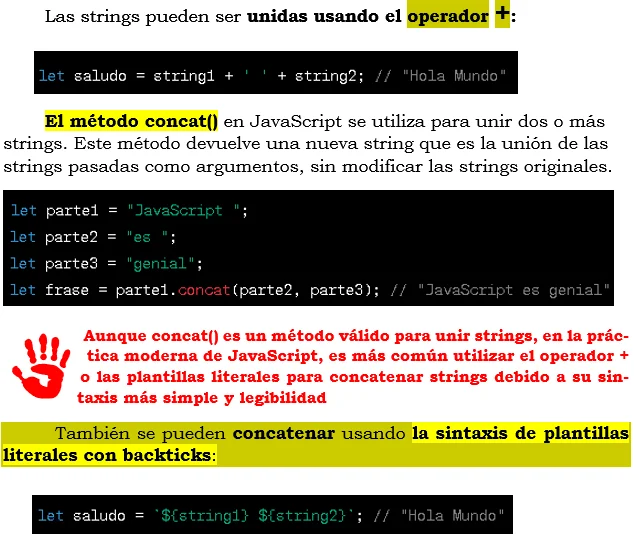PLANTILLAS LITERALES (TEMPLATE LITERALS)
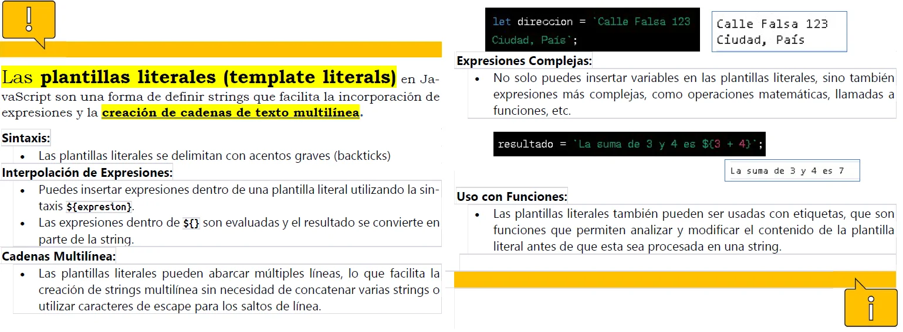STRINGS - Propiedades y métodos
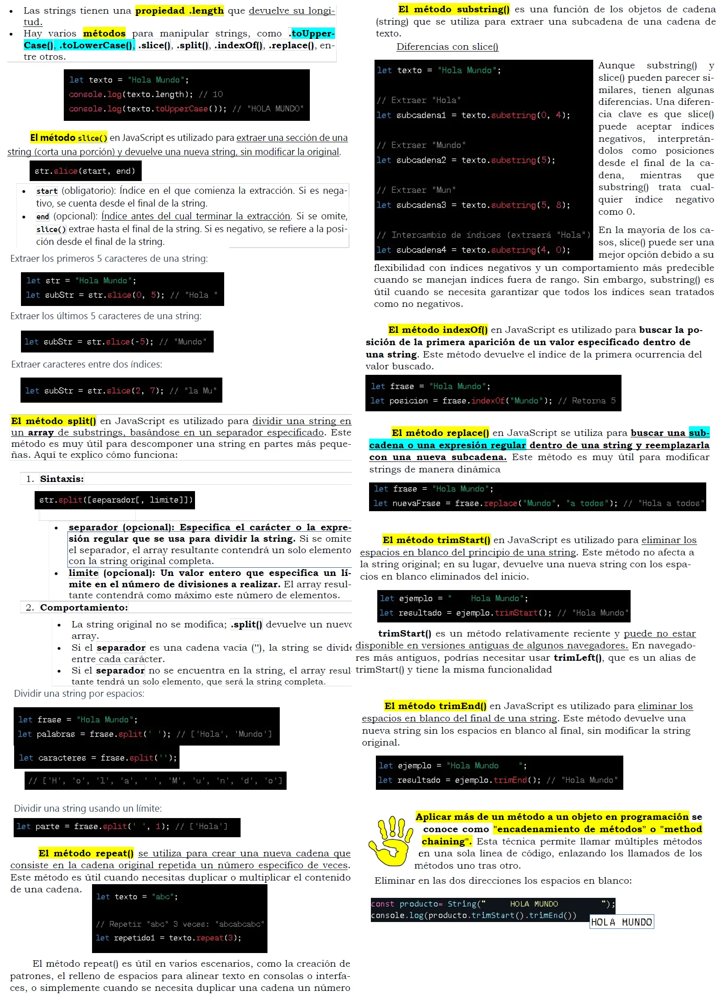DISTINCION ENTRE PROPIEDADES Y METODOS
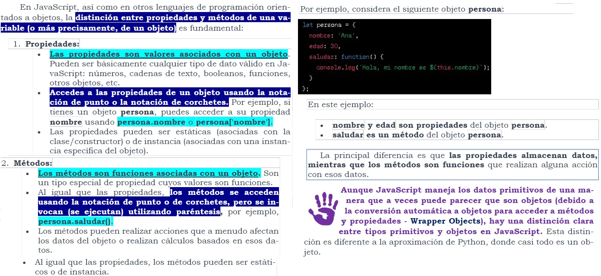NUMBERS - Tipos de números
1. Números Enteros: Incluyen tanto números positivos como nega-tivos, así como el 0. Ejemplo: 5, -3, 0.
2. Números Decimales (Flotantes):Números con decimales. Ejem-plo: 3.14, -0.5. Se utiliza el punto no la coma.
3. Infinity y -Infinity: IRepresentan el infinito matemático positivo y negativo.
4. NaN (Not a Number): Indica un valor que no es un número, a menudo como resultado de una operación matemática indefinida o errónea.
5. BigInt: En versiones recientes de JavaScript, el tipo BigInt fue introducido para representar números enteros muy grandes.
NUMBERS - Creación - Sintáxis
En JavaScript, hay varias formas de crear números, dependiendo del contexto y del tipo de número que necesites.
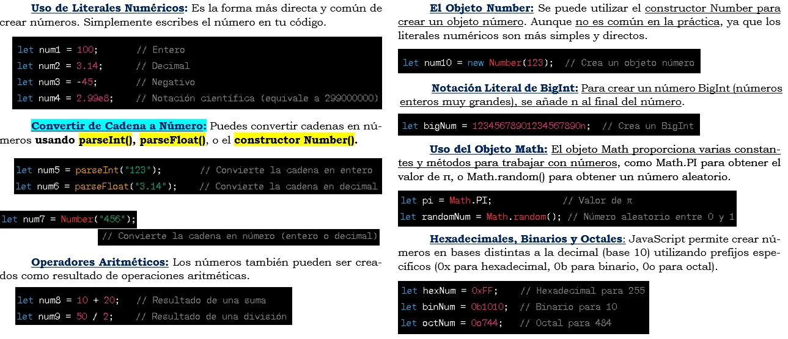NUMBERS - Operaciones con números
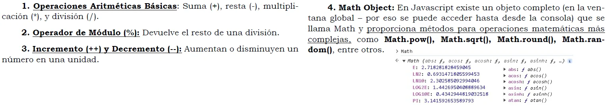Orden de las operaciones
En JavaScript, el orden de las operaciones sigue las reglas estándar de la aritmética, conocidas como la jerarquía de operaciones o la regla PEMDAS/BODMAS. Esto determina el orden en que se evalúan las operaciones en una expresión.
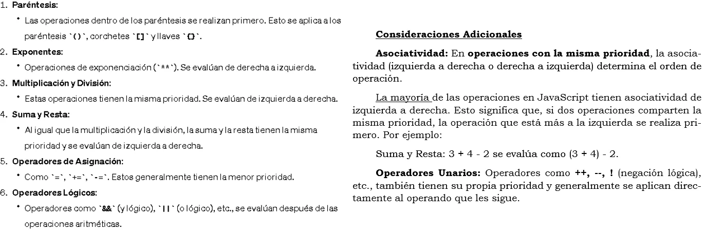Operadores unarios
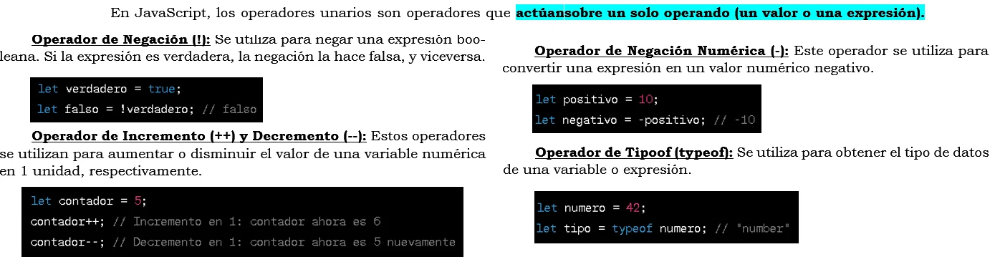Operadores binarios
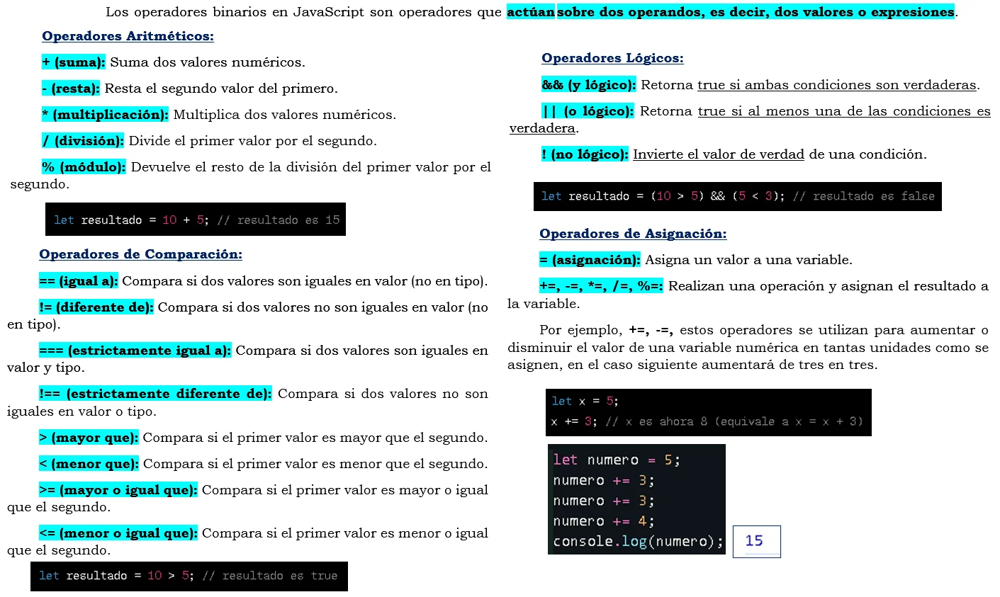Operadores ternarios
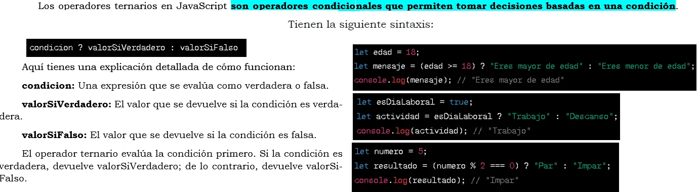NUMBERS - Propiedades y métodos
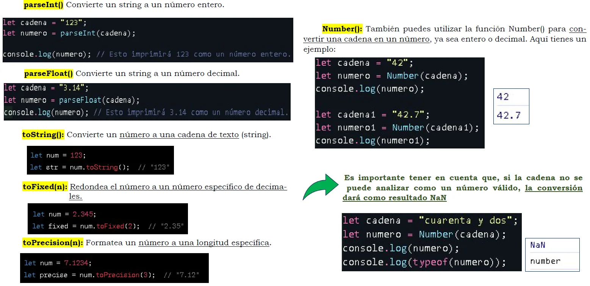NUMBERS - "Parsear"
"Parsear" en el contexto de la programación y la informática, se refiere al proceso de analizar y convertir una secuencia de datos de entrada (como texto) en una estructura de datos más manejable o necesaria en ese momento (como número). Este proceso es fundamental en muchas áreas de la informática, como la interpretación de lenguajes de programación, el procesamiento de datos, y la comunicación entre sistemas.
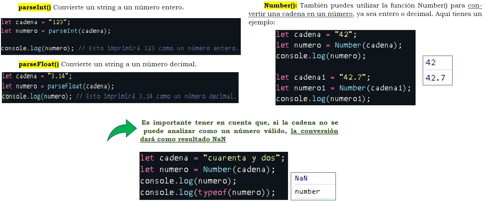NUMBERS - Dar formato a un nro. como peso Argentino
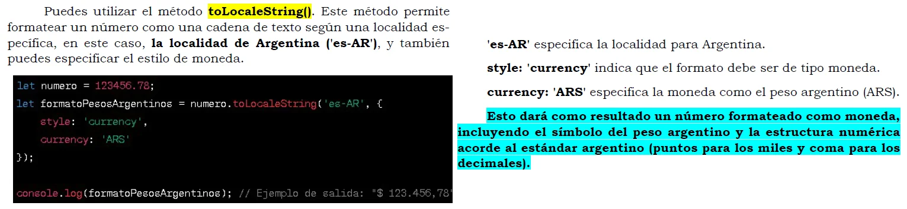NUMBERS - Comprobaciones
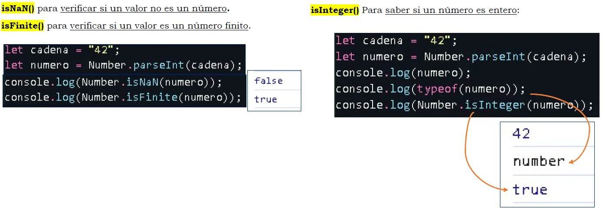NUMBERS - Precisión y problemas
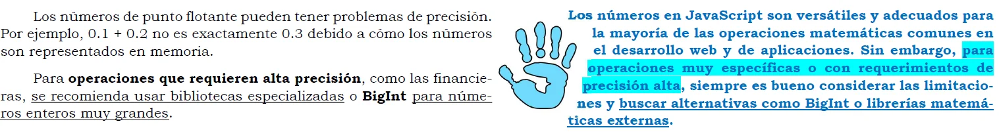BOOLEANOS - Conceptos clave
 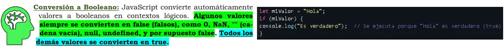
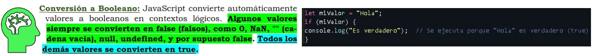
VENTANAS EMERGENTES
Las ventanas emergentes en JavaScript se pueden crear utilizando varias técnicas y funciones. Las más comunes son alert(), confirm(), y prompt(). Estas funciones crean ventanas emergentes sencillas para mostrar mensajes, pedir confirmación o solicitar información al usuario.
Alert: Muestra un mensaje y un botón de "Aceptar". Se utiliza principalmente para informar al usuario.
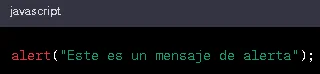Confirm: Muestra un mensaje con botones de "Aceptar" y "Cancelar". Se utiliza para pedir confirmación al usuario. Devuelve true si el usuario hace clic en "Aceptar" y false si elige "Cancelar".
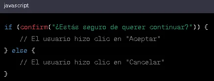Prompt: Muestra un cuadro de diálogo con un campo de texto para que el usuario ingrese información. Tiene botones de "Aceptar" y "Cancelar". Devuelve el texto ingresado si el usuario hace clic en "Aceptar" y null si elige "Cancelar".
Devuelve un dato de tipo String
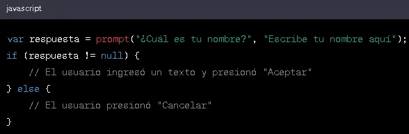Estas funciones son muy útiles para interacciones simples con el usuario. Sin embargo, tienen algunas limitaciones:
- No puedes personalizar su apariencia; el estilo y la presentación dependen del navegador y del sistema operativo del usuario.
- La ejecución del script se detiene hasta que el usuario responde a la ventana emergente.
Para ventanas emergentes más avanzadas y personalizables, puedes utilizar librerías de JavaScript como SweetAlert o Bootstrap Modal. Estas librerías ofrecen una mayor flexibilidad en términos de diseño y comportamiento y pueden integrarse mejor en la experiencia de usuario de tu sitio web.